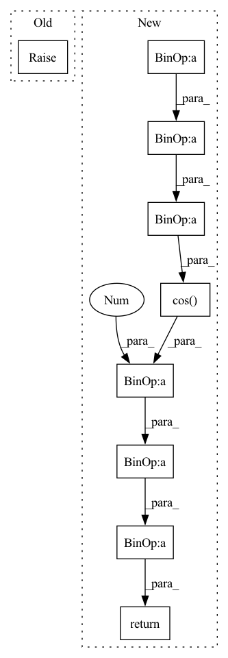

Pattern ID :18467
Before Change
return -torch.log(expm1(1e-4 + 10 * (t ** 2)))
def alpha_cosine_log_snr(t):
raise NotImplementedError
def log_snr_to_alpha_sigma(log_snr):
return torch.sqrt(torch.sigmoid(log_snr)), torch.sqrt(torch.sigmoid(-log_snr))After Change
return -torch.log(expm1(1e-4 + 10 * (t ** 2)))
def alpha_cosine_log_snr(t, s = 0.008):
alphas_cumprod = torch.cos( (t + s) / (1 + s) * torch.pi * 0.5) ** 2
return torch.log(1 / (1 - alphas_cumprod) - 1)
def log_snr_to_alpha_sigma(log_snr):
return torch.sqrt(torch.sigmoid(log_snr)), torch.sqrt(torch.sigmoid(-log_snr))In pattern: SUPERPATTERN
Frequency: 3
Non-data size: 9
Instances Fragment ID: 60310424
Project Name: lucidrains/imagen-pytorch
Commit Name: c28cee467dda5a0d503d2d9bf13be7d7b061238a
Time: 2022-06-08
Author: lucidrains@gmail.com
File Name: imagen_pytorch/imagen_pytorch.py
M Class Name: AnonimousClass
N Class Name: AnonimousClass
M Method Name: alpha_cosine_log_snr(2)
N Method Name: alpha_cosine_log_snr(1)
M Parent Class:
N Parent Class:
M File Name: imagen_pytorch/imagen_pytorch.py
N File Name: imagen_pytorch/imagen_pytorch.py
M Start Line: 282
M End Line: 283
N Start Line: 282
N End Line: 284
Before Change
return -torch.log(expm1(1e-4 + 10 * (t ** 2)))
def alpha_cosine_log_snr(t):
raise NotImplementedError
class learned_noise_schedule(nn.Module):
described in section H and then I.2 of the supplementary material for variational ddpm paper After Change
return -log(expm1(1e-4 + 10 * (t ** 2)))
def alpha_cosine_log_snr(t, s = 0.008):
return -log((torch.cos((t + s) / (1 + s) * torch.pi * 0.5) ** -2) - 1)
class learned_noise_schedule(nn.Module):
described in section H and then I.2 of the supplementary material for variational ddpm paper
Fragment ID: 60310413
Project Name: lucidrains/denoising-diffusion-pytorch
Commit Name: 96bb2ff3105964afae337e7064ceb13ead7b904c
Time: 2022-06-08
Author: lucidrains@gmail.com
File Name: denoising_diffusion_pytorch/continuous_time_gaussian_diffusion.py
M Class Name: AnonimousClass
N Class Name: AnonimousClass
M Method Name: alpha_cosine_log_snr(2)
N Method Name: alpha_cosine_log_snr(1)
M Parent Class:
N Parent Class:
M File Name: denoising_diffusion_pytorch/continuous_time_gaussian_diffusion.py
N File Name: denoising_diffusion_pytorch/continuous_time_gaussian_diffusion.py
M Start Line: 65
M End Line: 66
N Start Line: 68
N End Line: 69
Before Change
pass
def get_lr(self):
raise NotImplementedError
def _get_closed_form_lr(self):
raise NotImplementedErrorAfter Change
elif (self.last_epoch - 1 - self.T_max) % (2 * self.T_max) == 0:
return self.last_lr + (self.base_lr - self.eta_min) * (1 - math.cos(math.pi / self.T_max)) / 2
return (1 + math.cos(math.pi * self.last_epoch / self.T_max)
) / (1 + math.cos(math.pi *
(self.last_epoch - 1) / self.T_max)) * (self.last_lr - self.eta_min) + self.eta_min
def _get_closed_form_lr(self):
return self.eta_min + (self.base_lr - self.eta_min) * (1 + math.cos(math.pi * self.last_epoch / self.T_max)) / 2 Fragment ID: 60308352
Project Name: tensorlayer/tensorlayerx
Commit Name: cbef9e40fbc27064050f8fbadc064427b7729213
Time: 2022-04-11
Author: jiaronghan@outlook.com
File Name: tensorlayerx/optimizers/lr/torch_lr.py
M Class Name: CosineAnnealingDecay
N Class Name: CosineAnnealingDecay
M Method Name: get_lr(1)
N Method Name: get_lr(1)
M Parent Class: LRScheduler
N Parent Class: LRScheduler
M File Name: tensorlayerx/optimizers/lr/torch_lr.py
N File Name: tensorlayerx/optimizers/lr/torch_lr.py
M Start Line: 46
M End Line: 46
N Start Line: 127
N End Line: 134